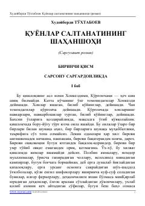

QSEgamberdi va Karimberdining qiziqarli va sarguzashtlarga boy maktab hayoti haqidagi roman.
Ushbu sarguzasht roman maktab o'quvchilari Egamberdi va Karimberdining qiziqarli va ba'zan kulgili sarguzashtlari haqida hikoya qiladi. Qishloq maktabidagi tartib-intizom va o'quvchilarning o'z maqsadlari sari intilishi asarning asosiy mavzusidir.